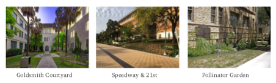
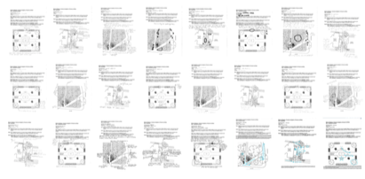
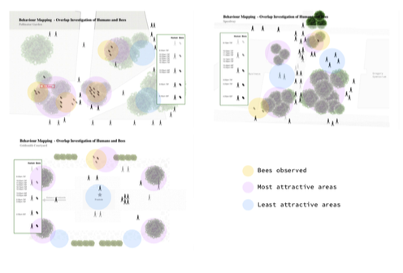

Bees attracts less attention during the landscape design. They are our humans’ friends. In this landscape research, we investigate the bees situation on the UT campus and figure out what are the barriers that involve in their relationship with humans. The overall research took 3 months. It involves 5 persons from different disciplines. We used many research methods including academic research, interview, behavior mapping, survey, etc. Each of us took part in the whole process to have a full understanding of the problem and I was also responsible for data collection, data analysis and data visualization in the final presentation.
We first interviewed the relative persons and forms our question - “ How do UT Austin’s practices positively support or negatively impact bees and their relationship to humans on campus? ” From the interview, we analyzed the problem and formed the our insight.
1. Global Environmental Impact
- “Bee Positive” landscapes can and should be created in urban environments to maintain healthy bee and human populations - “Bee Positive” landscapes are easier to cultivate than you may think - native bees like native plants, and native plants thrive in native soils
2. Environmental Impact at UT
- UT’s landscaping priorities have shifted toward a ‘Bee Positive’ approach in recent years - UT’s head Landscape Architect and Urban Forestry Supervisor both studied and prioritize the research of bees and bee beneficial landscapes - As funding and manpower becomes available, the landscape team is working on replanting areas to be ‘Bee Positive’ and native friendly - As more landscape areas are updated to be ‘Bee Positive’ more native bee populations will thrive
3. Global Human Impact
- Humans don’t always want to prioritize bees because of allergies, stigmas and fear - Humans experience negative bee bias because bees can occasionally sting when threatened (though they don’t want to) - Humans don’t always find landscapes that are positive for bees (native landscapes) aesthetically pleasing - It can require more manpower to maintain bee positive landscapes to the standard desired by humans
4. UT Human Impact
- Establishment of areas like the pollinator garden and hives throughout campus help to reframe bee’s in people’s minds - The work of upper management in the landscape department is supporting the health and proliferation of native bee populations on campus - The decision of landscape management to eliminate the use of pesticides and herbicides positively impacts bee populations on campus - Landscape ‘users’ on campus should reevaluate what their idea of a ‘pretty’ landscape is and focus more on what a ‘positive’ landscape for ecologies and humans is
5. Bees Impact Globally
- When most people think of bees they think of honey production, but bee’s most important role is in pollination - Crop pollination by bees is critical to maintaining adequate food supplies throughout the world - Bee populations are threatened primarily due to urbanization and the use of pesticides and fertilizers - Bees need humans to make smart choices in the rural and urban landscape environments in order to survive
6. Bees Impact at UT
- According to UT’s landscape teams, native bees are doing very well on campus where native and flowering plant types have been planted - Even non-native honey bee populations establish themselves in trees and wild landscapes throughout campus
What is the problem?
Based on the takeaways from the documentary and our own observations, it is clear that “ UT campus lacks integrated spaces that are designed for both bee and human occupation ” which leads to public misunderstanding of bee behavior and lack of interaction between the two parties.
Areas of Investigation
To learn what aspects of a garden are successful we observed three landscaped areas around UT’s campus: 1) Goldsmith Courtyard 2) Speedway & 21st 3) Pollinator Garden
These three spaces differ in their layout, purpose, and plantings thus allowing us to understand and compare unique conditions. Each space will support the two parties with varying success. Before gathering observations, we hypothesized that:
- The Pollinator Garden would primarily benefit bees - Speedway would entirely benefit humans - The Goldsmith Courtyard would fall somewhere in the middle of the spectrum
In order to get comprehensive data, we collected information about the three spaces over a span of 4 days, during both the week and the weekend. The conditions were recorded twice a day: in the morning and in the evening before sunset. For consistency, each participant visited all three gardens. Participants were asked to record the presence and movement of both bees and humans. In addition to this quantitative data, we asked the observer to note areas they found beautiful and unattractive to gain information on aesthetic preferences.
- Bees were only observed in areas that humans indicated were the most attractive or pleasant - Bees were never observed in areas that humans indicated were unattractive or unpleasant - Use of outdoor spaces is strongly determined by weather and temperature, particularly for bees - Even in areas of heavy human traffic, bees can thrive when the right plant life is provided - Humans tend to gather and linger in calmer spaces and under trees - Bees prefer sunlight while humans preference for sunlight or shade is dependent on temperature
To create integrated outdoor spaces that benefit both bees and humans, future campus gardens should include: - Flowering, native plants to provide pollen for bees and visual beauty for visitors - A combination of shade and sunlight so bees can thrive and people have environmental options - Areas for relaxation or socialization in addition to circulation spaces
